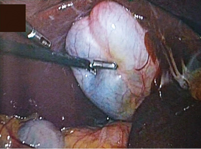
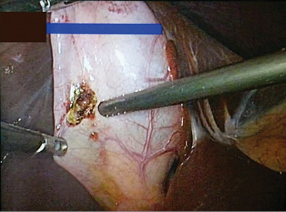
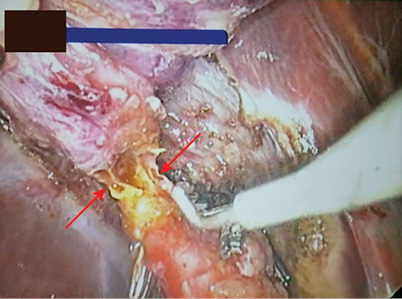
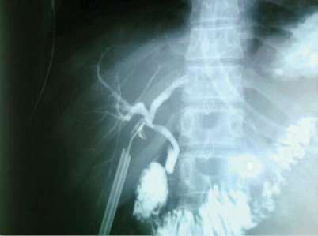
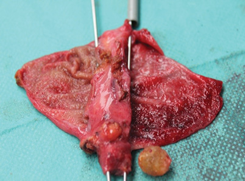
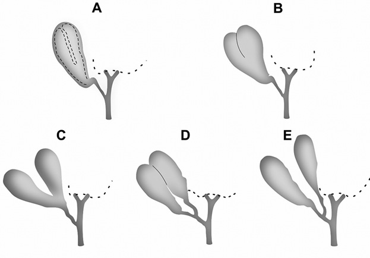
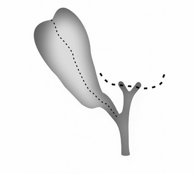

Laparoscopic management of double gallbladder diagnosed intraoperatively: A case report and review of literature
Laparoskopska obravnava podvojenega žolčnika, odkritega med operacijo: prikaz primera in pregled literature
Abstract
Double gallbladder is a rare congenital anomaly, which can present a challenge for the surgeon who performs laparoscopic cholecystectomies. The common first-line modality for screening in symptomatic gallbladder pathology is still ultrasonography, even though the accuracy is low. Preoperative diagnosis of this anomaly is not common as it is available in only 50 % of cases. Preoperative diagnosis and being acquainted with this anomaly decrease the possibility of injury to the biliary tract, the number of postoperative complications and the possible need for further surgical procedures.
We present a case of double gallbladder which was diagnosed during the operative procedure. Based on ultrasonography screening, which showed a gall-stone in an unchanged gallbladder, a laparoscopic gallbladder removal was indicated. Despite the finding of a double gallbladder, the performance of laparoscopic gallblade removal was uneventful.
Izvleček
Dvojni žolčnik je redka kongenitalna anomalija, ki je lahko izziv za kirurga ob laparoskopski holecistektomiji. Pri patologiji žolčnika, ki se pokaže s simptomi, je ultrazvočni pregled diagnostična metoda prve izbire, čeprav je natančnost rezultatov nizka. Pred operacijo se ta anomalija odkrije le v 50 %. Kadar se odkrije pred posegom, je možnost poškodovanja žolčevodov med operacijo manjša, zapletov po operaciji pa je manj. To velja tudi za morebitne nadaljnje potrebne kirurške posege.
Članek predstavi primer dvojnega žolčnika, ki ga je kirurg diagnosticiral šele med operacijo. Ker je ultrazvočni pregled pokazal žolčni kamen v nespremenjenem žolčniku, je bila laparoskopska holecistektomija na mestu. Poseg se je zaključili laparoskopsko brez zapletov.
1 Introduction
Congenital anomalies of the extra hepatic biliary system are important in the clinical setting as they can cause clinical, diagnostic and surgical problems (1). They are also associated with an increased incidence of intraoperative bile-duct injuries (2). Double gallbladder is an unusual and potentially hazardous malformation, which is rarely diagnosed pre-operatively (3). It is a very rare entity with an incidence of 1/4000 (4). The ratio of incidence between men and women is almost equal, though favouring the female gender at 1:1,7 (5).
Double gallbladder was first mentioned in 1674 when discovered upon autopsy by Blasius (6), the first mention of this pathology in a living patient was in 1911 (7). The anatomical variations were first described by Boyden in 1926 (4), in 1936 the congenital anomalies were classified by Gross (8). The Harlaftis classification published in 1977 is the most comprehensive and widely accepted (9).
The aim of this paper is to increase awareness of this anatomical variation and present ways of diagnosis and treatment during surgery as an aid to those encountering it for the first time during an operation.
2 Case report
A 28-year old woman came to us complaining of right upper quadrant pain, which had occurred several times in the form suggestive of biliary colic. Upon clinical examination the abdomen was painless, soft and had no palpable mass.
Ultrasonography showed normal intrahepatic biliary ducts and a normal common bile duct. The gallbladder appeared normal in size, the wall was of normal thickness and there was a single 1 cm gallstone in the infundibular pouch. There was no indication of the double gallbladder on ultrasonography. The clinical symptoms and the results of the ultrasonography warranted an elective laparoscopic cholecystectomy. The procedure was performed three months later. A laparoscopic exploration with 4 entry ports was performed. Upon entering the abdominal cavity and inspecting the gallbladder it looked septated (Figure 1).

The gallbladder was enlarged and taut, making the dissection in the triangle of Calot difficult so we reduced the gallbladder by aspirating the bile content. Despite this action a part of the organ remained taut so we aspirated that side too and emptied clear fluid – hydrops (Figure 2).

In view of this anomaly we chose first to dissect the gallbladder from its liver bed completely using the dome down technique. We then continued the dissection of the triangle of Calot and the cystic artery, which we found to be on the posterior wall. After transection of the artery we proceeded with the dissection and isolated the biliary duct connecting the gallbladder to the common bile duct (CBD) which had been clearly identified. After incising the duct, we performed an intraoperative cholangiography which showed good contrast flow and absence of calculi in the CBD. The image did not present any anomalous anatomy. After catheter removal and further dissection, a second duct was seen. In order to clarify the anatomical variation the decision to perform a second intraoperative cholangiography was made. Further incision of the duct revealed a second lumen (Figure 3).

We performed a second intraoperative cholangiography through this duct which afforded a good view of the biliary tree and good contrast flow (Figure 4). Both ducts were clipped and transected and the gallbladder removed. After removal of the gallbladder, inspection of its hepatic bed and haemostasis completion a drain was placed and the surgery concluded. Inspection of the gallbladder revealed a double gallbladder, one of which had a pathology – a 1 cm gall-stone impacted in the infundibulum causing hydrops and chronic cholecystitis. The specimen was sent for pathohistological examination.

The results of the pathohistological examination showed a gallbladder with two entirely separate lumens divided by a 5 mm thick septum. Clearly visible are two cystic ducts. One of the gallbladders had a 1 cm gall-stone impacted in the infundibulum (Figure 5).

There were no operative and postoperative complications. The patient was discharged on the second day.
3 Classification
In the past, several attempts have been made to classify double gallbladders. The anatomical variations were described by Boyden in 1926 who described vesica fellea divisa (bilobed, double gallbladder with a common neck) and vesica fellea duplex (double gallbladder with two cystic ducts). Vesica fellea duplex was further devided into H shaped type (two separate cystic ducts enter separately into the common bile duct) and Y shaped type (cystic ducts unite before entering the common bile duct) (4). In 1936, the congenital anomalies were classified by Gross who classified double gallbladder into types from A to E, showing the positions of the accessory organ and the distribution of the cytic ducts (8).
The most comprehensive, thorough and widely accepted is the Harlaftis classification published in 1977 (9). This classification separates two main groups (Type 1 and Type 2) based on morphology and embryogenesis. In Type 1 cystic primordium splits during embryogenesis, gallbladders share a common cystic duct, and in Type 2 gallbladders arise from separate primordium, which means that they have individual cystic ducts (5,9-13) Kim et.al. modified this classification and proposed that the Type 2 (accessory gallbladder) group should distinguish the right trabecular from the left trabecular variant (14) and Causey et.al. upgraded it with Type 3, which is a combination of Type 1 and Type 2 and arises from a primordium division or the joining of gallbladders from two separate primordia (10).
•

•
•
•
•
•

4 Diagnosis and treatment
The anomaly of a double gallbladder does not present with specific clinical symptoms and the incidence of pathological entities such as acute and chronic cholecystitis, cholecystolithiasis, empyema, torsion, cholecystocolic fistula, abdominal mass and carcinoma is no greater than observed with normal anatomy (15). The most common diagnostic method (and the most readily available) for right upper quadrant pain in most clinical settings is abdominal ultrasonography, however this procedure does not always afford a precise diagnosis of the anomalies of the gallbladder, as it does not provide accurate visualization of biliary anatomy (16,17). The preoperative diagnostic accuracy of abdominal ultrasonography can be as low as 50 % (18). At this point, the awareness of the radiologist of the possibility of a double gallbladder is very important as an accurate examination could show the need for further preoperative diagnostic modalities – in this case a preoperative diagnosis – and give the surgeon valuable information and forewarning.( 2,19)
One of the possible diagnostic modalities is computer tomography (CT) with the potential to provide a good view of different intraluminal masses, although the literature shows it is not reliable in detecting gall bladder anomalies (17,20). Magnetic resonance cholangiopancreaticography (MRCP) or endoscopic retrograde cholangiopancreaticography (ERCP) have a higher sensitivity and specificity for showing the anatomy and variations of the biliary system (16). MRCP is a relatively new modality, it is non-invasive, cheap, radiation-free, does not require anaesthesia, has a low dependency on the performer and affords an excellent assessment of the biliary system preoperatively, thus reducing the risk of damage especially during laparoscopic surgery (16,21). MRCP is the modality of choice to visualise the biliary system whereas ERCP is used as a therapeutic procedure (16). However, in the absence of suspicion of anomalous anatomy additional preoperative diagnostic procedures are not warranted.
The use of laparoscopy for removing double gallbaldder is still controversial (14). Upon review of the available literature, the laparoscopic approach is generally recommended for Type 1 double gallbladders and the open surgical approach is suggested for Type 2 double gallbladder even though there are some reports of successful laparoscopic removal of Type 2 (10,18). The reason for this recommendation is the theoretically increased risk of injury to the common bile duct, which is generally seen in 0.1–0.9 % of laparascopic gallbladder removals, and to the right hepatic artery (14,22-25). This usually happens due to the high position of the entry of the additional cystic duct and thus the necessity for more extensive tissue preparation and dissection (14). Nursal suggests laparoscopic surgery for all the types, supported however by excellent pre-operative diagnostic tests and intra-operative cholangiography (26). The surgeon has the option to perform an intraoperative cholangiography in the instance of an unclear biliary anatomy. The use of this procedure has been shown to reduce the risk of bile duct injuries by 30 % (27-30), but it does not ensure a safe removal with no injury to the biliary tract (17,24,26) If there are doubts as to the anatomy or possible injuries, the surgeon should have a low threshold to convert to open surgery (14,22).
5 Discussion
A double gallbladder does not present with specific symptoms and does not show an increase in the incidence of pathology in either one of the gallbladders. If without pathology, it is of no clinical importance (16). Besides the occurrence of an asymptomatic double gallbladder, it is possible to see double pathology or pathology restricted only to one of the two gallbladders (31-32). The most common pathology occurring in a double gallbladder is the formation of gall-stones (33). However, the incidence is no greater than that seen in normal gallbladders (34). A randomly discovered double gallbladder devoid of pathology is not an indication for operative therapy as there is no evidence of any associated greater risks (35). In the case of a symptomatic double gallbladder, the therapy of choice is either open or laparoscopic cholecystectomy (36). In this case, it is important to remove both gallbladders in order to avoid complications and relapses of symptoms or pathology in the remaining gallbladder (37-39). Several authors report successful laparoscopic cholecystectomies of double gallbladders (17,40), as is the case presented in our report.
6 Conclusions and recommendations
Preoperative awareness of anatomical anomalies is of great importance from the point of view of undesired injuries to the biliary system and of postoperative complications. The most routine diagnostic procedure for right upper quadrant pain, and also readily available, is the abdominal ultrasonography. However, the diagnostic accuracy for biliary anomalies is around 50 % (18). In the absence of any suspicion of anomalies, no further diagnostic procedures are warranted, thus presenting the surgeon with the task of recognising the anomaly and treating it intraoperatively. In this case the use of intraoperative cholangiography clarifies the anatomy, allowing us to avoid unwitting damage to the CBD and plan the next appropriate surgical steps to be taken, thus bringing the surgery to a successful conclusion. The surgeon should also always consider conversion to open surgery if in doubt.
In case of any suspicion or sign of anomalies of the biliary system, further diagnostic procedures are necessary in order to clarify the biliary anatomy. In this instance MRCP is the modality of choice as it has the highest percentage of accuracy in visualizing the biliary system.
If the anomaly is diagnosed preoperatively, the surgery should be performed by an experienced surgeon or transferred to an appropriate HPB centre for a successful completion of therapy; in the instance of intraoperative bile duct injuries, these too should be treated by an experienced HPB surgeon in a HPB centre.
The patient gives her consent to the publication of the article.